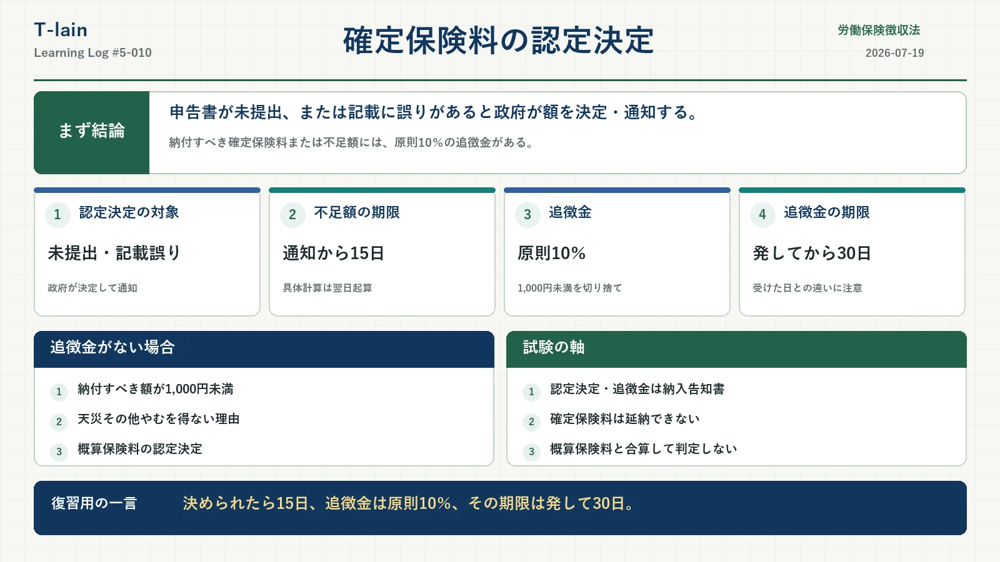

今日のテーマ
確定保険料申告書が提出されていない場合や、申告内容に誤りがある場合に行われる「確定保険料の認定決定」を確認する。
認定決定後に納める確定保険料または不足額と、追徴金では期限の決まり方が異なる。数字だけでなく、政府が決定して通知するところから流れを整理したい。
まず結論
確定保険料申告書が未提出、または記載に誤りがあると認められる場合、政府が確定保険料額を決定し、事業主へ通知する。
- 認定決定により納付すべき確定保険料または不足額は、通知を受けた日から15日以内に納付する。
- 原則として、納付すべき確定保険料または不足額の10％に相当する追徴金が徴収される。
- 確定保険料の認定決定と徴収法21条の追徴金は、納入告知書によって通知される。
- 確定保険料には、徴収法18条の延納制度は適用されない。
確定保険料の認定決定
労働保険徴収法19条4項では、次のいずれかに該当するとき、政府が労働保険料の額を決定し、事業主へ通知すると定めている。
- 事業主が確定保険料申告書を提出しないとき
- 提出された確定保険料申告書の記載に誤りがあると認められるとき
未申告だけが対象ではない。申告書を提出していても、賃金総額や保険料額などの記載に誤りがあれば認定決定の対象になる。
条文は「政府は、労働保険料の額を決定し、これを事業主に通知する」と規定している。「決定することができる」という任意的な書き方ではない点にも注意したい。
認定決定後の納付期限
政府が決定した確定保険料額に対し、納付済みの労働保険料が不足していれば不足額を納付する。納付済みの労働保険料がなければ、政府が決定した確定保険料を納付する。
認定決定の通知を受けた日から15日以内
条文上は「通知を受けた日から15日以内」である。期間を日で定めた場合は原則として初日を算入しないため、具体的な日数計算では、通知を受けた日の翌日を1日目として数える。
すでに納付した概算保険料が政府の決定した確定保険料を上回る場合は、不足額の納付ではなく、超過額の還付または充当が問題になる。
単独有期事業の20日・50日との違い
| 手続 | 基準となる時点 | 期限 |
|---|---|---|
| 概算保険料の申告・納付 | 保険関係が成立した日 | 20日以内 |
| 確定保険料の申告・納付 | 保険関係が消滅した日 | 50日以内 |
| 認定決定後の確定保険料・不足額 | 認定決定の通知を受けた日 | 15日以内 |
この20日・50日の整理は、一つの事業ごとに保険関係が成立する単独有期事業のもの。一括有期事業は継続事業と同様に年度更新を行うため、同じ形で扱わない。
覚える順番は「単独有期事業は、始まったら20日、終わったら50日。政府に決められたら15日」となる。
認定決定には追徴金がある
確定保険料の認定決定により、確定保険料または不足額を納付しなければならない場合、原則として追徴金が徴収される。
追徴金 ＝ 納付すべき確定保険料または不足額（1,000円未満切捨て）× 10％
例えば、認定決定による不足額が32,850円の場合は次のように計算する。
| 不足額 | 32,850円 |
|---|---|
| 1,000円未満切捨て後 | 32,000円 |
| 追徴金 | 3,200円 |
| 合計負担額 | 36,050円 |
合計負担額は36,050円となる。ただし、不足額と追徴金では納期限の基準が異なるため、必ずしも同じ期限に納付するものではない。
追徴金が徴収されない場合
認定決定が行われても、次の場合には追徴金は徴収されない。
- 認定決定により納付すべき確定保険料または不足額が1,000円未満の場合
- 天災その他やむを得ない理由により、認定決定による確定保険料または不足額を納付しなければならなくなった場合
「原則10％」「1,000円未満なら徴収なし」「天災その他やむを得ない理由があれば徴収なし」をセットで確認する。
概算保険料の認定決定との違い
| 認定決定の対象 | 追徴金 |
|---|---|
| 概算保険料 | なし |
| 確定保険料 | 原則10％ |
徴収法21条の追徴金は、同法19条5項によって納付する確定保険料または不足額を対象にしている。そのため、概算保険料の認定決定には徴収法21条の追徴金は課されない。
なお、印紙保険料には別の追徴金制度がある。「労働保険の追徴金は確定保険料だけ」と広く覚えるのではなく、ここでは通常の概算保険料と確定保険料の認定決定を比べていると考える。
追徴金の納期限は30日
認定決定による確定保険料または不足額と、追徴金では納期限の基準が違う。
| 納付するもの | 納期限の基準 |
|---|---|
| 認定決定による確定保険料・不足額 | 通知を受けた日から15日以内 |
| 追徴金 | 通知を発する日から起算して30日を経過した日 |
確定保険料または不足額は、事業主が通知を「受けた日」が基準。追徴金は、政府が通知を「発する日」が基準となる。
認定決定と追徴金は納入告知書で通知される
労働保険徴収法施行規則38条5項により、確定保険料の認定決定による通知と、徴収法21条の追徴金の通知は、所轄都道府県労働局歳入徴収官が納入告知書によって行う。
これは、この2つの通知についての限定的な整理である。「行政が関与する納付はすべて納入告知書になる」と一般化しないようにしたい。
確定保険料は延納できない
徴収法18条の延納対象は、同法15条から17条までの規定によって納付する労働保険料である。確定保険料を定める19条は含まれていないため、確定保険料やその不足額を18条の延納制度によって分割納付することはできない。
次の例は、労災保険と雇用保険の両方の保険関係が成立し、労働保険事務組合へ委託していない継続事業を前提とする。
- 確定保険料の不足額：10万円
- 新年度の概算保険料：35万円
- 合計：45万円
両者を合計すると40万円以上になるが、延納の金額要件は概算保険料だけで判定する。この例の概算保険料は35万円なので、40万円以上という要件を満たさない。
確定保険料の不足額を足して、概算保険料の延納要件を満たすことはできない。
追徴金と延滞金の違い
| 項目 | 発生する場面 | 考え方 |
|---|---|---|
| 追徴金 | 確定保険料の認定決定 | 原則として納付すべき額の10％ |
| 延滞金 | 納期限後も労働保険料等を納付しない場合 | 納期限後の経過期間に応じて発生 |
追徴金は認定決定に伴うもの、延滞金は納期限後の滞納に伴うもの。似た名前でも発生原因が異なる。
過去問
「追徴金は、確定保険料に係る政府の決定の場合に徴収されるものであり、その額は納付すべき額の100分の10である。」
答え：原則として正しい
確定保険料の認定決定により、確定保険料または不足額を納付しなければならない場合、原則として納付すべき額の10％の追徴金が徴収される。
ただし、計算の基礎となる額の1,000円未満は切り捨てる。納付すべき額が1,000円未満の場合や、天災その他やむを得ない理由がある場合には追徴金を徴収しない。
試験対策のポイント
- 確定保険料申告書の未提出だけでなく、記載誤りも認定決定の対象。
- 政府は確定保険料額を決定し、事業主へ通知する。
- 認定決定による確定保険料または不足額は、通知を受けた日から15日以内。
- 追徴金は原則10％で、計算の基礎となる額の1,000円未満を切り捨てる。
- 追徴金の通知は、通知を発する日から30日を経過した日が納期限。
- 概算保険料の認定決定には、徴収法21条の追徴金はない。
- 確定保険料の認定決定と追徴金の通知は、納入告知書による。
- 確定保険料または不足額は延納できず、概算保険料と合算して延納要件を判定しない。
今日のまとめ
確定保険料申告書が提出されていない場合や、その記載に誤りがある場合、政府が確定保険料額を決定して事業主へ通知する。これが確定保険料の認定決定である。
認定決定による確定保険料または不足額は通知を受けた日から15日以内に納付し、原則として10％の追徴金も徴収される。追徴金は通知を発する日から30日を経過した日が納期限となるため、2つの期限を分けて覚える。
復習用の一言まとめ
単独有期は始まったら20日、終わったら50日。認定決定は15日、追徴金は原則10％。